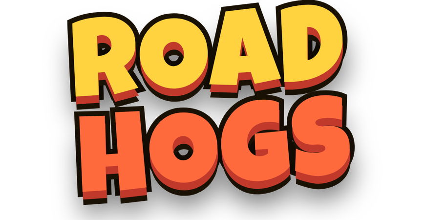
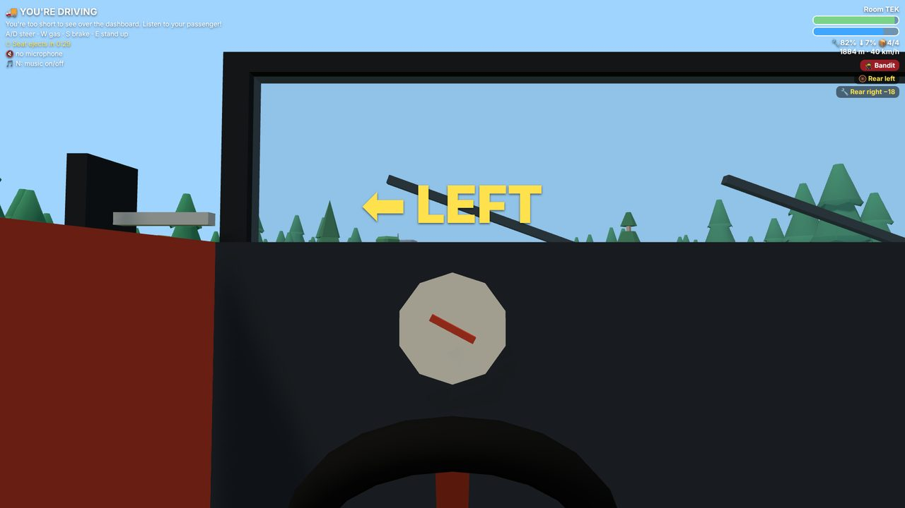
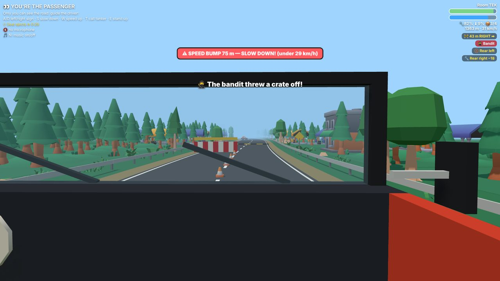
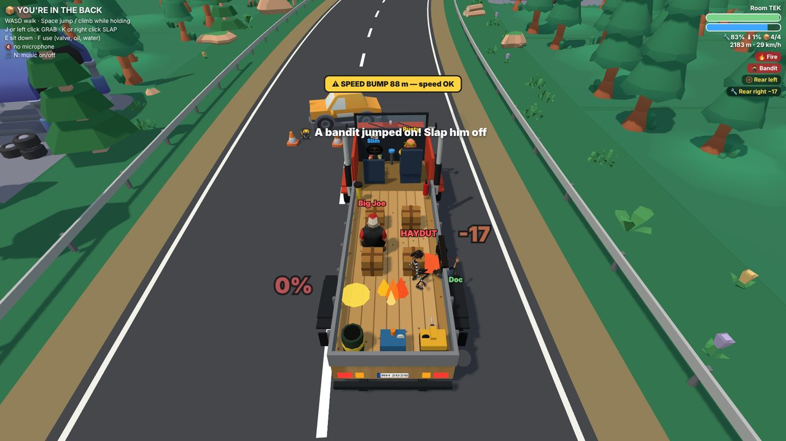

A chaotic online co-op trucking game for 2–4 friends. The driver can't see the road. The truck must never stop.2–4 arkadaş için kaotik bir çevrim içi ortak kamyon oyunu. Şoför yolu göremez. Kamyon asla durmamalı.
Voice chat built in · Works on PC and phone · No account neededSesli sohbet içinde · Bilgisayar ve telefonda çalışır · Hesap gerekmez
Nobody can do it alone. You have to talk — or shout — to get the truck to the end of the road.Kimse tek başına başaramaz. Kamyonu yolun sonuna götürmek için konuşmanız, hatta bağırmanız gerekecek.

Too short to see over the dashboard. Only sky and treetops. Steers, brakes and floors it on faith.Boyu tablonun üstünü görmeye yetmez; yalnız gökyüzü ve ağaç tepeleri. Direksiyonu, freni ve gazı tamamen güvenle kullanır.

The only one who sees the road. Calls the turns, spots the speed traps and radios the fuel tanker.Yolu gören tek kişi. Virajları söyler, radarları fark eder, yakıt tankerini telsizle çağırır.

Pump up flat tyres, drill out dents, put out fires, slap bandits off the cargo and hold on for dear life.Patlak lastikleri şişirir, ezikleri matkapla düzeltir, yangın söndürür, yüke dadanan haydutları şaplakla atar ve canını dişine takıp tutunur.
Pretty much everything, usually at the same time.Hemen her şey, genelde aynı anda.
Create a room, share the 4-letter code, and hit the road.Bir oda kur, 4 harfli kodu paylaş ve yola çık.